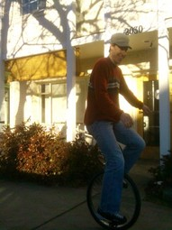

Yesterday was wonderfully warm, and our front door was propped open most of the day. Sometime around noon, a fellow walked in wearing khaki pants and a button-up shirt, just like the ones I used to wear. He was looking for another business nearby, and we helped him find it.

After he walked out, I took a look around, wondering what we look like to an accidental visitor in khaki pants. Here's what I saw: Ara and Ben were sitting on the couch crunching a difficult problem in Rails. Garett was working with Fred and Jeff. Corey was making things happen. Loud hip-hop filled the air. Three or four other folks were around, plumbing the magical pipes that the internet spouts out of. The entire building was humming with work and loud conversation and excited creativity.
If I was the accidental visitor, I would have to wonder: What the hell were those people doing? Computer stuff, clearly. Startup stuff? Art? The Twitter? Was it some kind of study hall? Some kind of co-op? It looks cool.
Yeah. This is dojo4. We make cool stuff. We make stuff cool. Bring your khaki pants and your laptop and ask us what the hell we're doing.